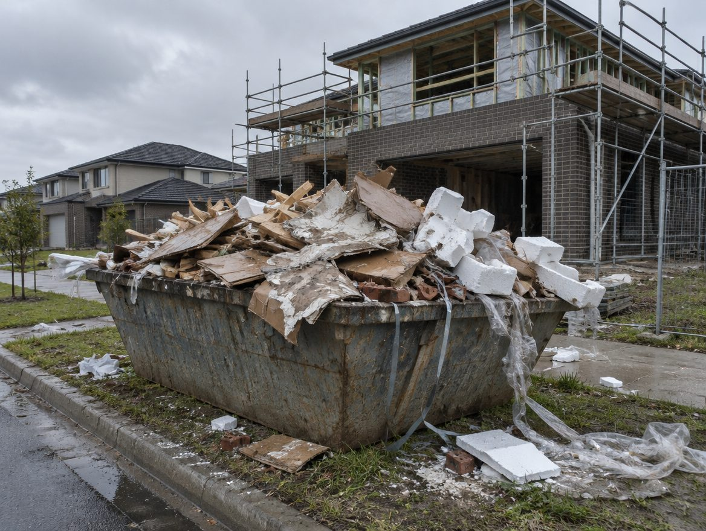
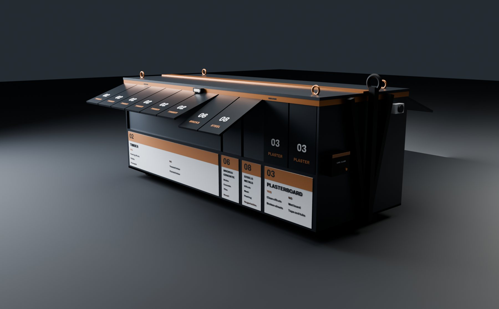
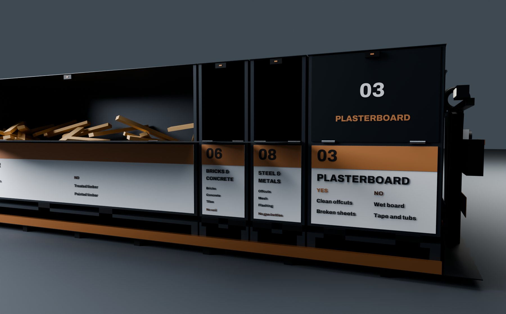
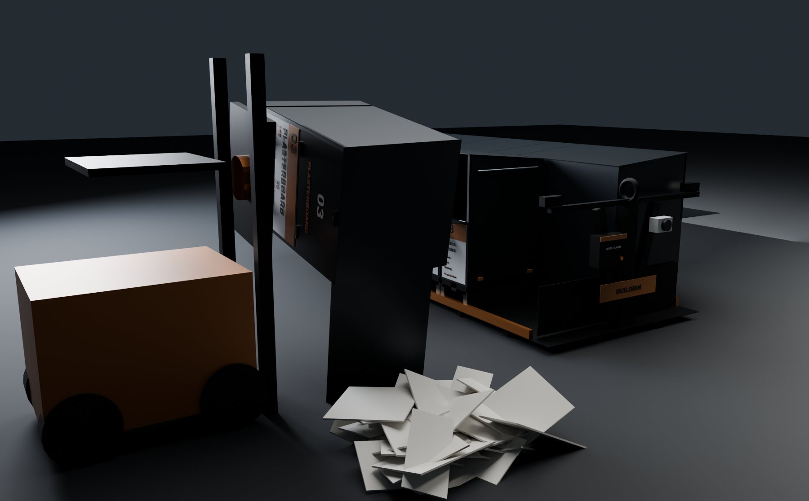
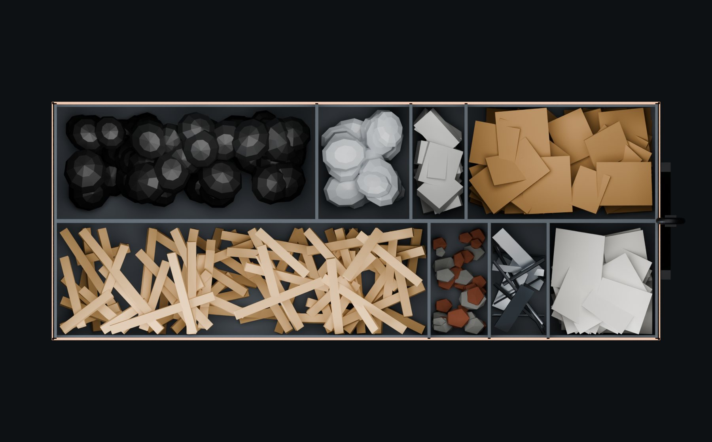
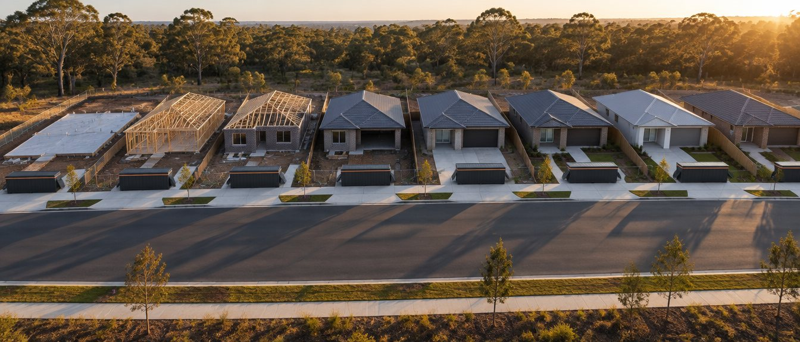

Builders
- Less levy, because sorted streams stay out of landfill
- One footprint and one truck instead of a row of skips
- A cleaner, safer site at every stage inspection
- Tonnes per home, by stream, for council plans and sustainability reporting
One recycling station on every new home site. Eight bins in one footprint, each sized to what a house build actually throws out.
Over-ordering shows up in the bins. Every home has an expected amount of waste. If the bins overflow or need extra change-overs, too much material was ordered, so estimators and purchasing order to what the job needs.
of Australia's waste comes from construction and demolition.
Your Home, Australian Governmenta tonne. Victoria's metro landfill levy from 1 July 2026, on top of the gate fee.
EPA VictoriaEight separated streams, one station, one hook-lift truck to change it over.
BuildBin station designThe problem with one big skip

A low hook-lift skid carrying eight lidded steel bins, on the lot from slab to handover. Trades drop each material into its numbered bin. Spin it, tap a bin to see what goes in, then lift it out and tip it the way the facility empties it.

A forklift lifts each bin off the skid by its fork pockets, weighs it and turns it on its side. The trap door on the bin's right-hand side swings open and the load slides out onto its own pile. The lid stays on and the streams never meet.
Each side of the skid is ten 585 mm modules and holds four bins, each one to six modules wide. To give an estate more room for bricks or cardboard, swap in a wider bin. The skid stays the same.
The supervisor locks or unlocks all eight bins at once from a phone over Bluetooth, and every opening is logged. Three motion-sensor lights on the skid cover both sides and the rear after dark, and an alarm arms itself for the hours you set, say 6 pm to 6 am and weekends. A manual override covers a flat phone or battery.


Concept design, modelled in Blender. Final dimensions, hook height, weight limits and the lock, light and alarm hardware are confirmed with the fabricator. Read the fabricator spec.
Bricks and concrete are the heaviest thing a new home throws out, but they barely take up room. Cardboard weighs almost nothing and fills a skip. Bins fill by space, so we sized every bay by space.

Lids off, from above. Each bin's width is its share of the loose volume a new home produces, rounded to whole 585 mm modules. The smallest bins are one module wide so they can still be loaded by hand.
That's about seven 6 m³ skips of mixed waste, or 2.4 BuildBin change-overs, already sorted.
The value comes from never mixing the waste in the first place. Sorted at the source, each stream is worth more and costs less to deal with.

The station arrives at slab and leaves at handover. Every lot on the estate runs the same system, so every trade learns it once.
Illustrative image
Put in your build volume. The estimate counts the levy you avoid on material that's recovered instead of landfilled. Disposal and service pricing is set in the pilot, so it isn't included here.
| Per home | A year | |
|---|---|---|
| Surplus material | ||
| Extra tonnes kept out of landfill | ||
| Levy avoided | ||
| Loose volume |
Estimate only. Uses 32.2 kg of surplus per m² of floor area (a measured rate for single-storey detached homes in New Zealand; Australian brick-veneer homes may run higher) and the BuildBin material split. Levy rates from EPA Victoria and the Queensland Government. Gate fees, hire and transport aren't included.
A plasterer doesn't get paid until the wall meets the finish level in the contract. BuildBin works the same way. Builders write the BuildBin Standard into every subcontract, and recycling gets checked at each stage like any other work.
Your Home, the Australian Government's sustainable building guide, tells builders to use written contracts with all trades that include waste minimisation clauses. The BuildBin Standard is that clause, ready to use.
Illustrative image
Concrete and steel offcuts, formwork timber, plastic. Bays 06, 08, 02, 01
Framing offcuts and pallets. Bay 02
Brick and tile breakage, roofing offcuts, wrap. Bays 06, 08, 01
Plasterboard, cornice and packaging. Bays 03, 04, 05
Appliance and fitting packaging, final clean. Bays 04, 05, 07
Your Home is the Australian Government's guide to sustainable homes. Its waste minimisation advice for builders reads like a brief for BuildBin.
Plan for waste separation and sorting on site during construction.
BuildBin separates at the source. Eight streams are sorted where they're made, never mixed.
Provide recycling skips and colour code or label waste skips and protect them from contamination, rain and wind.
One station does all of that. Numbered, labelled bins with hard lids, on one footprint.
Use written contracts with all trades that include clauses requiring waste minimisation.
The BuildBin Standard is a ready-made subcontract clause.
Negotiate recycling paybacks with local resource recovery firms.
Recycle Group processes the streams. Who gets the value of recovered material is set out in the pilot agreement.
Quotes from Your Home, Waste minimisation (yourhome.gov.au). BuildBin is an independent Recycle Group initiative. It isn't endorsed by or affiliated with the Australian Government. See how BuildBin lines up with Your Home
No long contract up front. We run BuildBin on a set of your homes next to your current skips, weigh everything, and report back.
We confirm where the station sits on your standard lot and driveway.
We record what your current skips cost and recover, so there's something to compare with.
The station arrives with the slab pour and stays until handover.
A one-page sheet and a five-minute walk-through for supervisors and trades.
Each bin is weighed at our facility, so every tonne is recorded by stream.
Tonnes recovered, contamination, cost against your baseline, and what to change.
Tell us roughly how many homes you build and where. We'll come back to set up a site check.